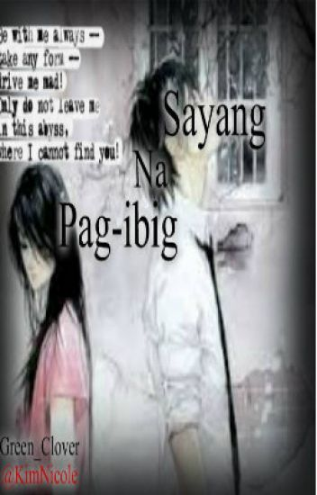

Sayang na Pag Ibig
'*'*'*'*'*'*'*'*'*'*'*'*'*'*'*'*'*'*'*'*'*'*'*'*'*'*'*'*'*'*'*
Oo na! Sinasagot na kita!"
"YESSSS! Sobra mo akong pinasaya nagyon Jen!"
**
It's been 2 weeks since ng sinagot ko si Rain, at I'm glad dahil nagwork-out ang relationsip namin.
2 months syang nanligaw sa akin, and I guess sapat na 'yun para mapatunayan nyang mahal nya ako.
At na-realize ko na din na mahal ko na siya.
**
"Jen, sabay na tayo pumasok.." sabi sa akin ni Rain nang makalabas ako ng gate ng bahay namin
"Tara!" aya ko dito at nag-lakad na, nang makalayo na kami sa bahay namin ay agad ko itong niyakap
"I miss you baby!" sabi ko dito habang yakap ko siya
"Miss na din kita.." sabi niya at niyakap din ako
Sikreto ang aming relayon. Oo, alam kong bawal itong ginagawa namin at mali, pero anong magagawa namin? Nagmamahal lang kami.
**
Lumipas ang 7 buwan at kami pa rin ni Rain, mas lalong tumatag pa ang aming relasyon. Ngayon, ngayon na ang 7th Monthsary namin kaya naman ay napagplanuhan naming mamasyal at mag-date.
Maliligo na pala ako dahil sa mag-aayos na ako para mamaya, kaya tinext ko muna si Rain para magpaalam.
To: Baby Rain :">
Hi Baby! Happy 7th monthsary! Ligo muna ako ah? Love you. :*
Nangma-send ko na ang aking text ay isinaksak ko muna ang cellphone ko sa charger, baka kasi malowbat ako mamaya eh.
Matapos nun ay naligo na ako.
**
Nang matapos kong maligo ay lumabas na ako ng CR. Nang makalabas ako ay natigilan ako sa aking nakita..
Si Mom..
Hawak ang cellphone ko at galit na nakatingin sa akin.
"Jen. Sino 'tong Rain na 'to?" mahina na sabi ni Mom, alam kong nagtitimpi ito ngayon dahil kita ko na nakakuyom ang kamay nito.
"M-mom.." mangatal-ngatal kong sabi, natatakot ako kay Mom, baka kung anong gawin niya sa akin
"Jen! Sabi ko sino 'tong Rain na 'to?!!!!!" nagyo'y ay sumigaw na siya, nagulat ako sa pagsigaw nito kaya napaiyak ako
"M-mom, b-boyfirend ko po.." kinakabahan kong sabi habang umiiyak
"Bumoboyfriend ka na ngayon ha Jen?! Ganyan ka na ba?! Lumalandi ka na?! Kabata-bata mo palang nag-boboyfriend ka na?!Jusko Jen! Trese anyos ka palang! Ganyan na lang ba?! Di ang sabi ko sa'yo saka kana magboyfriend pag nakatapos ka na n pag-aaral?! Ganyan nalang ba ang susukli mo sa lahat ng paghihirap namin ng Dad mo?! Matapos ka namin pag-aralin, pakainin, alagaan, ingatan, iyan na lang ang isusukli mo ha?! Ang lumandi?! Jen, simplen hiling lang na h'wag ka muna magboyfriend, di mo sinunod?!!" sigaw ni Mom na nanginginig na at umiiyak, napahagulgol ako ng iyak dahil sa sinabi nito
"M-mom, mahal k-ko po si R-rain. Sorry po at nagboyfriend agad ako, mahal ko na po talaga siya eh.." mangiyak-ngiyak kong sabi kay Mom
"Gaano na kayo katagal?" malamig na sabi ni Mom
"7 months na po.." nakatungo kong sabi
"7 MONTHS?! PITONG BUWAN KA NANG NAGLILIHIM SA AMIN JEN?! GANYAN BA ANG PAG PAPALAKI NAMIN SA'YO HA?!! JEN!!" mas lalong pasigaw na sabi ni Mom.
Napaiyak na lang ako sa sinabi ni Mom.
"Makipaghiwalay ka na sa kaniya.." malamig na sabi ni Mom
"P-pero--" naputol ang sasabihin ko ng biglang magsalita si Mom
"HIHIWALAYAN MO NA ANG RAIN NA 'YAN SA AYAW AT SA GUSTO MO! SINO BA PIPILIIN MO?! KAMING PAMILYA MO O ANG RAIN NA 'YAN?!" ang sakit-sakit, mismong magulang mo papapiliin ka? Sinong pipiliin ko? Parehas ko silang ayaw mawala.
"Mom naman eh! Wag naman ganyan! Parehas ko kayong mahal! Nasasaktan ako sa ginagawa mo Mom! Kahit naman bata pa ako, marunong na akong mag-mahal! Mom, mahal namin ang isa't-isa, hindi ko sya kaya mawala pati kayo, kaya mom, WAG NIYO NA PAKIALAMAN PA ANG RELSYON NAMIN!!" sabi ko, nagulat ako dahil biglang may lumagapak na kamay sa pisngi ko, sinampal ako ni Mom? Hindi ako makapaniwala, never niya pang nagawa 'to sa akin
"Kung gusto mo sumama sa kaniya, lumayas ka na dito.." sabi ni Mom at lumabas na ng kwarto ko
Napaupo na lang ako sa sahig dahil sa sobrang sakit na nangyari sa akin.
Ano na ang gagawin ko? Sinong pipillin ko? Di ko sila kayang mawala. Mahal ko sila. Mahal ko si Rain, pati na rin ang pamilya ko. Anong gagawin ko? Putcha naman. Ang hirap ng buhay ko. Ang sakit-sakit.
**
Tinext ko muna si Rain para sabihing hindi muna kami matutuloy sa date namin. Nagreply ito kung bakit pero di ko na siya nireplyan muna dahil sa gulong-gulo ang isip at puso ko ngayon.
Ano ba ang nararapat? Anong gagawin ko? Haaaaay. Gusto ko na magpakamatay pero mali 'yun. Nasasaktan na talaga ako ng sobra.
Kailangan kong gawin ang nararapat. Oo, kahit masakit gagawin ko. Haaay.
Agad kong kimuha ang cellphone ko at tinext si Rain.
To: Baby Rain :">
Let's meet at the park.
Pagkasend ko nun ay agad akong nagbihis at pumunta sa park.
**
Nakita ko na dun si Rain nakaupo at masayang nakatingin sa akin.
"Hi baby!" bati nito sa akin at niyakap ako, hindi ao makatingin sa kaniya, nasasaktan ako, Rain h'wag mo naman ako pahirapan oh?
Nginitian ko na lang ito ng malungkot at umupo sa tabi niya.
"Happy 7th monthsary Jen.." sabi nito at may ibinigay na flowers ang chocolates sa akin, kinuha ko naman 'yun.
Bumuntong hininga muna ako bago magsalita, "Rain.." nakayuko kong sabi, hindi ko kayang tumingin sa mga mata niya dahil baka mas masaktan ako pag makita kong masasaktan siya
"Rain, let's break up.." malamig na sabi ko sa kaniya, napansin kong natigilan ito sa akin sinabi
"J-jen, anong sinasabi mo?" sabi nitong mangutal-ngutal, bigla akong patingin sa kaniya at nakita kong may lumabas na luha mula sa mga mata niya, Rain, I'm sorry.
"Sorry Rain. Di na kita mahal. Ayoko na sa'yo, may iba na akong mahal, etong mga chocolates and flowers mo? Di ko kailanagan niyan!" sabi ko sa kaniya at hinagis ang chocolates at flowers na bigay niya at agad akong tumakbo
Habang tumatakbo ako, napapaiyak na lamang ako sa sobrang sakit.
Sorry Rain, sorry di kita pinaglaban, sorry nagsinungaling ako sa'yo. Sorry Rain. Mahal na mahal kita Rain, patawarin mo ako..
**
Nakarating na ako sa bahay at duon ko nilabas ang lahat ng hinanakit ko. Inilabas ko lahat ng sakit na nararamdaman ng puso ko. Ang sakit-sakit. Mapatawad mo sana ako Rain. :'(
Lumipas ang 5 araw ay medyo umayos na ako, medyo nakamove on na ako kahit papaano, pero hindi ko parin mapagkakaila na mahal ko parin si Rain.
Naglalakad ako ngayong umaga sa street ng aming bahay ng biglang may humawak sa balikat ko.
"Jen, mag-usap muna tayo please?" nanigas ako sa aking kinatatayuan sa aking narinig, s-si Rain.
Agad kong tinanggal ang pagkakahawak nito sa balikat ko at agad na tumakbo pabalik sa bahay. Hindi ko pa kayang makita siya. Ayoko muna siyang makita dahil sa nasasaktan ako.
**
Lumipas ang 3 buwan at sa tuwing nakikita ko o nakikita ako ni Rain ay tumatakbo at lumalayo ako sa kaniya. Hindi pa rin kasi ako handa. Nasasaktan parin ako para sa aming dalawa. Sayang ang relasyon namin. Sobrang sayang.
Halos araw-araw ay tinetext at tinatawagan niya ako kaya lang hindi k sya sinasagot dahil nahihirapan ako.
**
Ngayon ay ang araw na masakit para sa akin. 1 year..
1 year na sana kami ni Rain..
Sayang.
Nagulat ako nang biglang may nagtext sa aking cellphone. Agad ko naman itong binasa.
Nagulat ako sa nabasa ko, at hindi sadyang napaiyak sa aking nabasa.
From: Rain
Hi baby. Sorry kung lagi kitang tinetext, tinatawagan, at hinahabol tuwing nakikita kita. Alam kong may mahal ka ng iba gaya ng sinabi mo sa akin. Mahal pa din kita Jen. Ikaw pa rin ang nagpapatibok ng puso ko. Ngayon, narealize ko na wala na talaga akong pag-asa pa sa'yo. Kaya, pinapalaya na kita. Sayang no? 1 year na sana tayo ngayon. Haha. Happy anniversary baby! Haha. Sana h'wag mong makalimutan ang lahat ng pinagsamahan natin, sana maalala mong may minahal kang 'Rain', sana h'wag mong makalimutan na naging parte ako ng buhay mo. Aalis na ako Jen, napagpasyahan ko kasing lumipat na muna ng tirahan dahil sa hindi ko muna kayang makita ka dahil bumabalik na naman ang sakit. Sana pag nagkita ulit tayo balang araw ay mawala na ang sakit na 'to, at maging magkaibigan na ulit tayo. Maging masaya ka sana sa mahal mo, pag sinaktan ka niya, text mo lang ako. Lagi akong nandito para sa'yo. Ingat ka palagi Baby. I love you. I'll miss you. :"(
Mahal pa din kita Rain. At habang buhay kitang mamahalin. Happy anniversary din.Sorry sa lahat ng sakit na binigay ko sa'yo. Mapatawad mo sana ako.
THE END